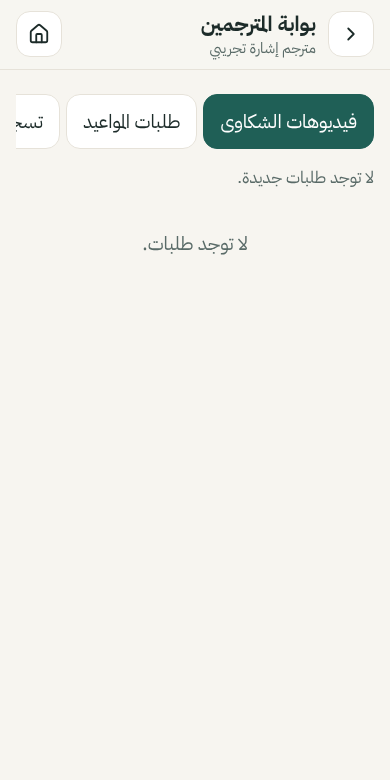
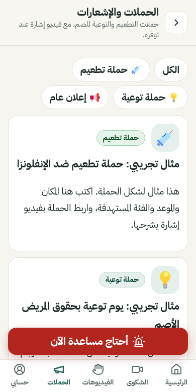

المميزات
ثلاثة أدوار في التطبيق: المريض، والطبيب أو الممرض، ومدير المحتوى. لكل دور شاشاته.
🙋 للمريض
- اختيار الأعراض بالصور: الصداع، ألم البطن، ألم الصدر، الدوخة، الحرارة، الغثيان، الحساسية، صعوبة التنفس، والألم في أماكن أخرى.
- تحديد الشدة: خفيف، متوسط، شديد.
- تحديد مكان الألم على صورة الجسم.
- الإجابة على أسئلة الطبيب بالضغط: نعم، لا، لا أعرف، أو اختيارات.
- كتابة رسالة للطبيب مع جمل سريعة جاهزة.
- مشاهدة السؤال مكتوبًا، ومعه فيديو الإشارة إن توفر.
- تنبيه «اطلب المساعدة فورًا» عند اختيار صعوبة التنفس أو ألم الصدر الشديد.
- لا يطلب الاسم الحقيقي ولا رقم الهاتف.

👨⚕️ للطبيب والممرض
- تسجيل دخول آمن قبل الوصول لأي بيانات مريض.
- فتح المقابلة برمز من 4 أرقام يظهر على هاتف المريض.
- قراءة الأعراض التي اختارها المريض، بعد موافقته فقط.
- أكثر من 20 سؤالًا طبيًا جاهزًا مرتبة حسب الموضوع مع بحث.
- كتابة سؤال جديد بخط كبير، واختيار نوع الإجابة.
- تنبيه مرئي وامض واهتزاز عند طلب المريض المساعدة، دون الاعتماد على الصوت.
- ربط مباشر بهاتف المريض دون إنترنت بمسح رمز QR.
- تسجيل خروج تلقائي بعد 15 دقيقة دون نشاط، مع حذف نسخ المقابلات المرتبطة من هاتف الطبيب.

🎥 فيديو شكوى بالإشارة وبوابة المترجمين
- المريض يسجّل فيديو حتى 90 ثانية بلغة الإشارة من الكاميرا، أو يختار فيديو من جهازه. لا يُسجَّل صوت.
- يختار أعراضه اختياريًا، ويحدد إن كانت حالته مستعجلة.
- لا يُرسل الفيديو إلا بعد موافقته على عرضه على المترجم والطبيب المعالج فقط.
- المترجم المتفرغ يدخل «بوابة المترجمين»، يشاهد الفيديو، ويكتب الترجمة بالعربية.
- تظهر الترجمة للمريض في «طلباتي»، مع زر لعرضها على الطبيب بخط كبير.
- الفيديو يُحذف تلقائيًا بعد 7 أيام، أو فورًا عندما يحذفه المريض.
يحتاج خادم المستشفى ليصل الفيديو للمترجم. على هذا الموقع بدون خادم يُحفظ على الهاتف فقط ويقول التطبيق ذلك صراحة.

📅 موعد عيادة مع مترجم
يُدخل المريض اسم العيادة والتاريخ والساعة، ويصل الطلب لمترجمي الإشارة. المترجم يرد «سأحضر مع المريض» مع رسالة، أو يعتذر.
📣 الحملات والإشعارات
صفحة لحملات التطعيم والتوعية والإعلانات العامة، مصنّفة ومرتبطة بفيديو إشارة. يضيفها مدير المحتوى من لوحة الإدارة.

🤟 مكتبة لغة الإشارة
8 موضوعات و49 كلمة وجملة: التحية والتعريف، الألم ومكانه، الصداع والدوخة والحرارة، الحساسية من الأدوية، الأدوية وطريقة استخدامها، الأسئلة الشائعة، الموافقة والرفض وطلب المساعدة، والطوارئ.
- مشغّل بأزرار كبيرة: تشغيل، إيقاف، إعادة، وعرض أبطأ.
- الجملة العربية مكتوبة أسفل الفيديو دائمًا.
- حفظ الفيديو على الهاتف للمشاهدة دون إنترنت.
- إذا لم يتوفر الفيديو تظهر رسالة صريحة بذلك. لا نعرض صورًا أو حركات مولّدة على أنها لغة إشارة.

⚙️ لوحة إدارة المحتوى
- إضافة وتعديل الكلمات والجمل وفيديوهاتها.
- إضافة الأسئلة الطبية وربط كل سؤال بفيديو.
- إدارة الأعراض وصورها وأيقوناتها.
- إدارة التصنيفات والحملات وبريد التواصل.
- حالة كل فيديو واضحة: متوفر أو غير متوفر.
- تصدير المحتوى واستيراده كملف.